Why summarize data?
Summarizing data necessarily involves selectively presenting information from a data set, and a poor choice of summary can be very misleading. You need to learn to select good summaries for data, but for the choices available to make sense you should start with the fundamental question: why summarize data at all?
The reason we summarize data is that we are interested in deriving understanding from the data we collect, and strangely enough it can become more difficult to understand what data have to tell us the more data we have to work with unless we summarize it.
|
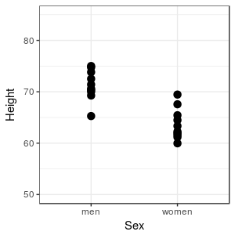Imagine that we were interested in comparing the heights of men and women in our class - we could measure all of the men and all of the women, and plot their heights in a simple graph. When we don't have too many observations we can display all of the data, lose no information, and see how the heights compare. Clearly, most men are taller than most women in this sample, but there is some overlap in height, because the tallest woman is taller than the shortest man. Based on this graph, though, we would probably be comfortable saying something like "in general, men are taller than women". |
|
|
This works fine for a small data set, but what if we had 10,000 observations rather than ten for each sex? |
|
| 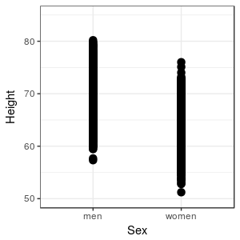
The differences between men and women are still visible, but there appears to be more overlap in heights in this graph than in the first graph, because our large sample is including some unusually tall and unusually short individuals for each sex. Unfortunately, we can no longer see how many data points fall at each height, so we're losing some of our ability to judge what the typical heights are for the sexes. We could inspect the data in a spreadsheet, but that would only make the problem worse - it's even more difficult to discern patterns by inspecting thousands of rows of data than it is to observe them in a graph. |
|
|
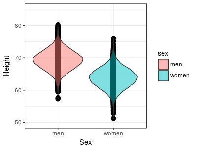We can use a graphical method called a violin plot that draws a shape around the dots to indicate the density of points along the y-axis. You can see that in both of the sexes there is a clear concentration of data near the middle of the range of heights, and really tall and really short people are much less common. What is there to learn from these data about heights of men and women? The violin plot is showing that there is a typical value of height for each sex, at around 69 inches for men and around 64 inches for women - we can say that men are generally taller than women by about 5 inches. We can also see that there is variation around each of these typical values, and the heights of men and women overlap quite a bit - some women are taller than the typical man, and some men or shorter than the typical woman. |
|
We can simplify our presentation of the data even further by selecting a single value that represents the typical data value, and one that represents variability in the data. In doing so we will choose not to base our understanding on inspection of the raw data, and instead to base it on some general attributes of the data sets, but in exchange we gain a clearer understanding of the general patterns the data show us.
|
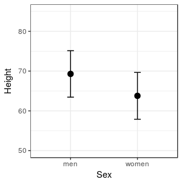The graph to the left is presenting a measure of where the middle of the data set is for each sex (the black dots), along with a measure of the range of heights that are typical for each sex (the t-shaped bars extending above and below each mean). With just a couple of carefully chosen pieces of information we can extract the essential information in the data, without getting overwhelmed by the details. But, there's a catch - summaries represent specific characteristics of the data, and if we base our conclusions on poorly chosen summaries we can mislead ourselves and others about what the data say. Obviously, we need to know how to select informative summaries, and to avoid picking misleading ones. |
Picking appropriate summary statistics
Any value we calculate from our data is a statistic, and statistics that are meant to summarize and describe some important aspect of a data set are summary statistics, also called descriptive statistics.
There are many summary statistics to choose from, but not all of them are appropriate for all data types. It's helpful to start off by making a distinction, then, between categorical variables and numeric variables. There are some additional considerations in picking good summaries for numeric variables, which we'll address after we look at summaries for categorical variables.
Summarizing categorical variables
For categorical variables, the choice is pretty simple - the best summary statistics for categorical variables are frequencies and relative frequencies. If we counted the number of male and female bears in the data set we used in our first activity, we would present the numbers in a frequency table, like this:
| Sex | Frequency | Relative frequency |
|---|---|---|
| Female | 44 | 0.308 |
| Male | 99 | 0.692 |
| Total | 143 | 1 |
The relative frequencies are also given, which are just the frequencies divided by the total. The sum of the frequencies equals the total number of data points in the data set. Since the relative frequencies are proportions of the total, they will always sum to 1.
You can convert relative frequencies to percentages by multiplying by 100 - so, 30.8% of the bears in this data set are females, and 69.2% are males. Since we're used to thinking about percentages, it's useful to think of relative frequencies in terms of their equivalent percentages to help us interpret relative frequencies, but be clear - relative frequencies are proportions, not percentages.
Summarizing numeric variables
When we want to summarize numeric variables, we need to address two additional issues:
- What characteristic of the data do we want to measure?
- What is the shape of our distribution?
Remember this picture from the first day of class:
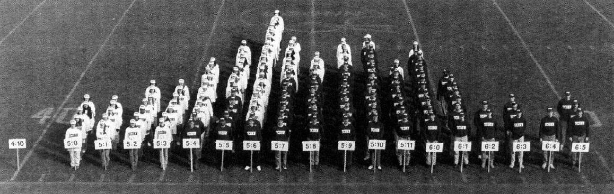
This is a photograph of a "human histogram" that shows the distribution of a numeric variable, height. The term "distribution" refers to where along the number line data values fall, and histograms are an excellent way of assessing the distribution of numeric data. The sideline of this football field is the x-axis of the graph, which has signs indicating height to the nearest inch - the variable whose distribution you are interested in is placed on the x-axis of a histogram. Each student is standing behind the sign indicating his or her height, and the number of students behind each sign gives us the y-axis, which is the frequency of occurrence of heights in these one inch intervals. Men are wearing black shirts and women are wearing white shirts, but try to ignore this for the moment and treat the data as one big, overall data set.
If you look at this distribution, you should notice a couple of things. First, some heights are more common than others, and the most common heights are in the middle of the distribution. This is an indication that there is central tendency for these heights. Second, not everyone has the same height. This is an indication that there is dispersion in the data.
Central tendency
The reason we use measures of central tendency is to characterize the typical data value from a data set. We will always want to report a measure of central tendency when we summarize a data set. We will learn about three measures of central tendency for now: mean, median, and mode.
The most commonly used measure of central tendency is the average, or more correctly, the arithmetic mean, or just the mean. The mean for this set of heights is about 5' 8" overall across both sexes (men are in dark shirts, women in light shirts).
The formula for the mean is:
Taken together, this formula is saying:
The arithmetic mean of variable x equals the sum of x data values from the first to the last, divided by the sample size.
The median of a data set is the middle value. If we have data values 18, 19, 21, 22, 26 sorted in order from smallest to largest, the middle value is the third one, which is 21. If we had an even number of data values, like 18, 19, 21, 22, then there isn't a middle data value, and instead the median is between the two middle numbers; it's calculated the sum of the two middle numbers divided by 2, or (19+21)/2 = 20.
The mode is the most common data value. If you are working with discrete numeric variables, counting up the number of times data values occur is a good way to find the mode. This doesn't work as well with continuous numbers, like heights, because there may not be any duplicates at all. Any duplicates that occur may be coincidences, and may not be good indications of a typical value. If we ask for the mode when we are using MINITAB, it will count duplicates, even if the data are continuous - we won't use MINITAB's reported modes when we work with continuous data.
Dispersion
Measures of dispersion are essential parts of a description of data, because the typical value doesn't represent all of the data. If you look at the human histogram again, you'll see that although the mean might be a good choice for the typical value for the entire set of heights, most students are not 5' 8". If all we did to summarize the data was to report a mean, we would be giving the impression that 5' 8" is representative of the heights of all the students, but that's not really accurate. We also need a measure of how var from this central value students generally fall, and measures of dispersion do this for us.
Dispersion around the typical value can be measured, using statistics like the standard deviation. The standard deviation is a measure of the average distance of data values from the mean - big standard deviations mean the data are highly variable around the mean, and small standard deviations mean the data are less variable. The standard deviation for the histogram of heights is about 3" - which means that on average students are 3" above or below the mean of 5' 8".
The formula for standard deviation is this:
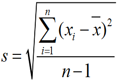The standard symbol for standard deviation is a lower-case s. To calculate the standard deviation, we subtract the mean from each data value, square the difference, and sum the squared differences. We then divide by n-1, which is called the degrees of freedom, and take the square root of the quotient. Degrees of freedom are used in statistics to account for cases in which we need to use one statistic to calculate another - in this case, we need to use the mean to calculate the standard deviation. When this is the case, we tend to under-estimate the standard deviation if we just divide by n, and subtracting 1 from n corrects for the problem.
Since the standard deviation is based on variability around the mean, it has a natural relationship with the mean - when we report a mean as our measure of central tendency, we usually report standard deviation as the measure of dispersion.
The other measures of dispersion we will learn today are the variance and the interquartile range.
The variance is just the standard deviation squared - think of it as the average squared difference between data values and their mean. It's not as easily interpreted as the standard deviation because it's not in the same units as the data. For example if we had measured heights in feet and we found the standard deviation was .5 feet, the variance would be 0.25 ft2. Variance gets used later in the semester when we start doing hypothesis testing, but we won't be using it yet. The standard symbol for variance is s2, and its formula is:
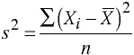Notice that the sigma symbol doesn't have a from or to index listed - these are fairly commonly omitted when all of the data values are to be summed over, so when you don't see a "from" or "to" index assume that you are to sum over all the data.
The interquartile range is the next measure of dispersion we'll learn about, which is based on percentiles rather than on variability around the mean. To understand the interquartile range, we will use this illustration of a set of 16 data values, sorted from smallest to largest:
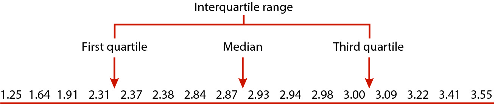
As we already learned, the median is the middle data value, but since 16 is an even number of data points the median is the midpoint between the 8th and 9th value, like the illustration above. The median divides the data set in half, so 50% of the data values fall below it, and 50% fall above it. Another name for the median is the 50th percentile, because it's the data value below which 50% of data points fall.
We can extend this approach to find other percentiles besides the 50th - 1/4 of 16 is 4, so halfway between the 4th and 5th data values is the 25th percentile, because 25% of the data fall below that value. Halfway between the 12th and 13th data values is the 75th percentile, because 75% of data values fall below that point. Since the 25th, 50th, and 75th percentiles divide the data into quarters, we can also call them quartiles.
|
|
Let's see how this would work in practice. The table to the left has the same data as the illustration, but it's out of order. The "Rank order" column shows the data values numbered from smallest to largest. Click on the Rank order column heading to sort the data from smallest to largest. Now that the numbers are in order, you can use the rank ordering to identify the data values to use to calculate the median - the median is halfway between the 8th and 9th data values, and it's equal to (2.87+2.93/2) = 2.9 The 25th percentile is between the 4th and 5th data values, and is equal to (2.31+2.37)/2 = 2.34 The 75th percentile is between the 12th and 13th data values, and is equal to (3+3.09)/2 = 3.045 It's important to remember that we only use the rank ordering to find the quartiles, but the quartiles are expressed as data values, not as their ranks (for example, the median is between the 8th and 9th data values, but it's equal to the midpoint between the data values, 2.9, not the midpoint between the ranks, 8.5). |
Finally, now that we know what the quartiles are, we can calculate the interquartile range by subtracting the 25th percentile from the 75th percentile: 3.045 - 2.340 = 0.705.
Just like the standard deviation is a natural pairing with the mean, the interquartile range is a natural pairing with the median, because interquartile ranges are based on quartiles, and the median is simply the second quartile.
Skewness
We can also characterize a third property of the data, called its skewness. Skew refers to the asymmetry in a distribution.
| 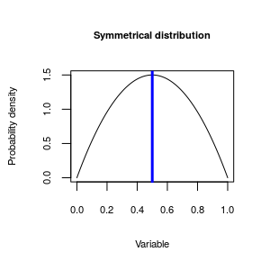 |
The distributions of heights shown above are fairly symmetrical around the mean, like this symmetrical distribution - the distribution peaks in the middle, and drop off evenly as you move away from the middle. The blue vertical line is indicating the mode, or peak of the distribution - when we talk about symmetry, it's relative to the location of the mode. However, distributions aren't always symmetrical. |
| 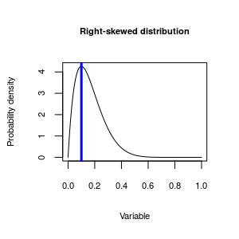 |
This distribution is asymmetrical around the mode - the distribution extends much further to the right than it does to the left, so this distribution is skewed. We can further, though, and identify the direction of skew by which side of the mode the "long tail" on the distribution is found. The long tail in this one is pointed towards the positive side of the number line, so we call it positively skewed. Since, by convention, we put positive numbers on the right side of a graph, it's also common to call positively skewed distributions right skewed.
|
| 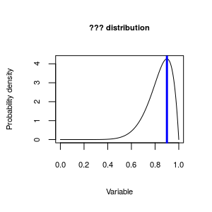 |
Now, given the explanation for the right skewed distribution you just read, what do you think we would call this distribution? |
The reason we care about skewness in the distribution of our data is that it makes a big difference in how we interpret the data. The animation below illustrates what happens to our three measures of central tendency (mean, median, and mode) as the distribution goes from right to left skewed. You'll see that when the distribution is symmetrical they are all the same, and we can't really make a bad choice of a measure to represent the typical value for our data set. But, in skewed distributions they are not all the same, and the choice matters more.
|
If you play the animation you'll see that as a distribution goes from being right skewed to symmetrical to left skewed the relative positions of the mean and median change. Since we want our measure of central tendency to be an indicator of the typical data value, it looks like the median or mode are better choices than the mean as a measure of central tendency for skewed distributions. So, if the choice of measure of central tendency we use depends on the shape of the distribution, we need to be able to recognize skewed distributions when we see them so that we can choose the best measure for the data set. |
Determining the shape of a distribution
There are both graphical and numerical methods of determining the shape of a distribution.
Discrete numeric data can be summarized with a frequency table, and we can look at the distribution of frequencies in the table to determine the shape. For example, frequencies and relative frequencies of observations of bears each month during a study of wild bear populations might look like this:
| Month | Frequency | Relative frequency |
|---|---|---|
| 4 | 13 | 0.091 |
| 5 | 9 | 0.063 |
| 6 | 7 | 0.049 |
| 7 | 16 | 0.112 |
| 8 | 34 | 0.238 |
| 9 | 31 | 0.217 |
| 10 | 19 | 0.133 |
| 11 | 14 | 0.098 |
| Total | 143 | 1 |
The month with the most sightings of bears is August (month 8), with a frequency of 34 (nearly 25% of the observations overall). The numbers drop off both earlier and later in the year around August, so this variable is fairly symmetrical.
Continuous data will often not show repeat values the way that discrete numbers do, so to get an idea of which data values are common and which are rare with a continuous variable, it is necessary to break the number line into bins, and then count up data values that fall within the bins. If we plot the numeric variable on the x-axis, and plot the frequencies of data values falling in the bins on the y-axis, we can use the graph to diagnose the shape of the distribution.
|
To the left is an example in which data on rainfall (on the x-axis) is being divided up into bins that are 10 mm wide. The data points falling in each bin are identified and counted, and then a bar is drawn to indicate the number of data points in the bin. This type of graph is called a histogram, and you can see it's very similar to the human histogram of heights we were looking at earlier. You can see that the distribution of this rainfall data is pretty bell-shaped - most of the rainfall measurements are around the mean of 100 mm, and rainfall numbers become less common moving in either direction away from the center. This example shows a fairly simple example, with a symmetrical distribution around a single mode. Distributions like this are described as bell-shaped. |
Bell-shaped distributions are common, but not universal.
|
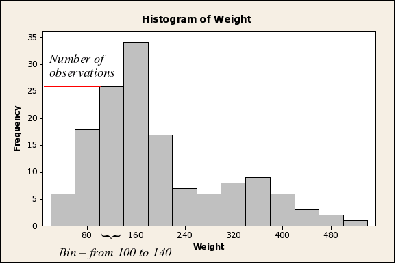This histogram shows the distribution of body weights for data on bears. You can see that by using a histogram we can not only tell that the data are positively skewed, you can see there is another complication: the bear data shows signs of being bimodal (that is, there is a big peak around 160 kg, and a second, smaller one around 360 kg), probably because adult males are substantially larger than either the females or juveniles of both sexes. Histograms are the best way to understand the shape of the distribution of a continuous numeric variable, provided that you have a large enough sample size (we'll learn more about the ins and outs of histograms in the next activity). |
For continuous variables, a useful method of assessing shapes of distributions numerically is the five number summary. The five number summary is made up of the minimum data value, the first quartile, the median, the third quartile, and the maximum data value. As long as there is only one mode in the data, the relative spacing of these numbers indicates the direction of skew.
For example, if you had a skewed distribution that looked like one of these:
You can see that in a left-skewed distribution the minimum is further from the median than the maximum is, and the first quartile is further from the median than the third quartile is. This arrangement is reversed for a right-skewed distribution - the minimum and first quartile are closer to the median than the maximum and third quartile are, respectively. By comparing the spacing of the values on either side of the median, you can see the direction of the skew.
To sum up...descriptive statistics
A summary of the kind of descriptive statistics to use for your data is here:
| Variable type | Numerical summary statistic |
|---|---|
| Categorical | Frequencies, relative frequencies |
| Numeric, symmetrical | Mean, standard deviation |
| Numeric, asymmetrical | Median, interquartile range (opt. skewness, mean) |
| Numeric, bimodal | No simple set of summary statistics - locations of the modes can be noted. |
When the variable is categorical, use frequencies or relative frequencies.
When the variable is numeric, and the distribution is symmetrical, use the mean as the measure of central tendency, and the standard deviation as the measure of dispersion.
When the data are asymmetrical (skewed), then the median is a better choice, and should be paired with the interquartile range. Since the mean and median are different for skewed distributions, some will report median and mean and use the difference between them as an indication of skew. Skewness values can also be reported.
If the data set has more than one mode, then there isn't a simple set of summary statistics that represents the data well. We will learn to recognize bimodal distributions, but they are difficult to work with, and we won't focus on methods for analyzing them in this class. We will note the locations of the modes, present a histogram showing how they are distributed, and leave it at that.
The standard deviation as a measure of dispersion
We already learned that standard deviations are a natural pair with
means, but there is another reason that the standard deviation is so
commonly used as a measure of dispersion. We can use standard deviations
to predict the number of observations that will fall within a specified
distance from the mean, once we know the shape of the distribution. The
following table gives the expected percent of observations that will
fall within 1, 2, or 3 SD of a mean, depending on whether the
distribution is "bell-shaped" (like the normal distribution), or some
other shape (like a flat line with no peak in the middle, or a bimodal
distribution).
| Shape of the distribution of data | ||
|---|---|---|
| Distance from the mean | Bell-shaped | Any shape (e.g. uniform, bimodal) |
| 1 SD | 68% | Unpredictable |
| 2 SD | 95% | ≥ 75% |
| 3 SD | 99% | ≥ 89% |
Remember our height data - the mean was 5' 8", and the standard deviation was 3". The histogram was roughly bell-shaped, so we would expect that 68% of heights would fall between 5' 8" - 3" = 5' 5" and 5' 8" + 3" = 5' 11". We would expect 95% of heights to fall within 2 standard deviations, or 6", of the mean, so between 5' 8" - 6" = 5' 2" and 5' 8" + 6" = 6' 2".
Dispersion affects interpretation of results
Let's look at another example. If a pharmaceutical salesperson told you: "Taking Pressurex reduces blood pressure on average by 10 mm Hg", should you be impressed? Does that mean that nearly everyone who takes the medication will have reduced blood pressure? Or do many people take the medicine and experience no change, or even have their blood pressure increase? The answer depends on the standard deviation.
Let's assume the standard deviation of blood pressures is s = 10 mm. Since the improvement in blood pressure was 10 mm, patients that fall more than 1 s above the mean would have an improvement of 0, and would not benefit from the drug. How many people would fall 1 s or more above the mean?
First, if you assume that blood pressures have a nice symmetrical, bell-shaped distribution, what percentage of people would have blood pressures above the mean?
Click here to see if you're right.
Next, we know from the table that 68% of people will be within 1 s of the mean (either above or below), so what percentage would be within 1 s above the mean?
Click here to see if you're right.
So, if 50% of all people are above the mean, and 34% are between the mean and the mean plus 1s, what percentage have blood pressures even higher than 1 s above the mean?
Click here to see if you're right.
So, based on these calculations, if the standard deviation in the reduction in BP is 10, then we would expect 16% of patients to either have no improvement, or to have an increase in BP instead of a decrease.
What if instead the claimed 10 mm Hg average improvement was accompanied by a standard deviation of 3.33 mm Hg?
|
Let's look at this graphically - the animation on the left always uses 10 mm Hg as the mean improvement, and it starts with a standard deviation of 10 mm Hg. We already calculated that 16% of patients aren't helped by Pressurex, when zero improvement is 1 standard deviation above the mean. As the animation progresses, the mean improvement stays the same but the standard deviation gets smaller until it's equal to 3.33 mm Hg. An improvement of 10 mm Hg is now 10/3.33 = 3 standard deviations away from 0, and as you can see this means that nearly everyone had their BP reduced on the drug. From the table, we can see that 99% of data values fall within 3 s of the mean, so 1% of patients will be further away than 3 s from the mean. Half of that 1% that is more than 3 s away from the mean is above it, so only 0.5% would be expected to be higher than 0, where there was no improvement in BP. |
What should you learn from this? Since the mean is always the same throughout the animation, you should see that it's not enough to know the average amount of improvement, because the mean alone doesn't tell you how consistent the amount of reduction is. You also need to know the standard deviation to know whether that average reduction of 10 mm Hg is typical of what most of the patients experience, or whether the amount of reduction could be much greater or much less than the mean.
In this week's activity we will learn to calculate and interpret summary statistics for variables, and to select appropriate summaries given the shape of the distribution of a numeric variable.